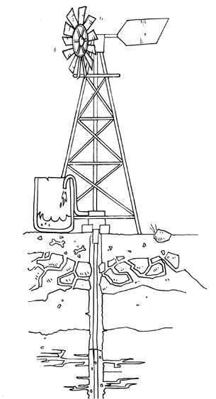
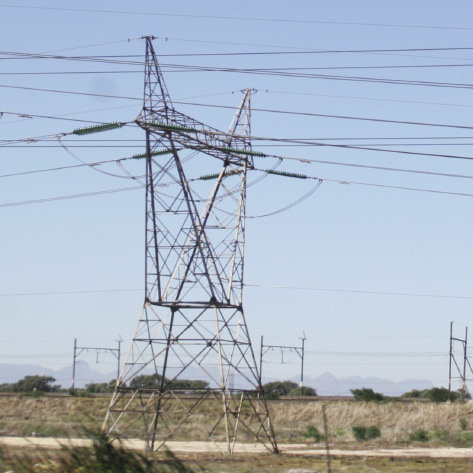
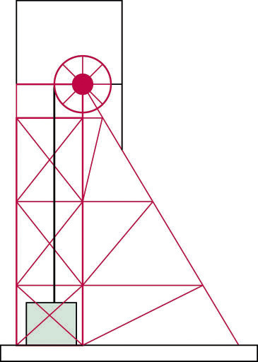
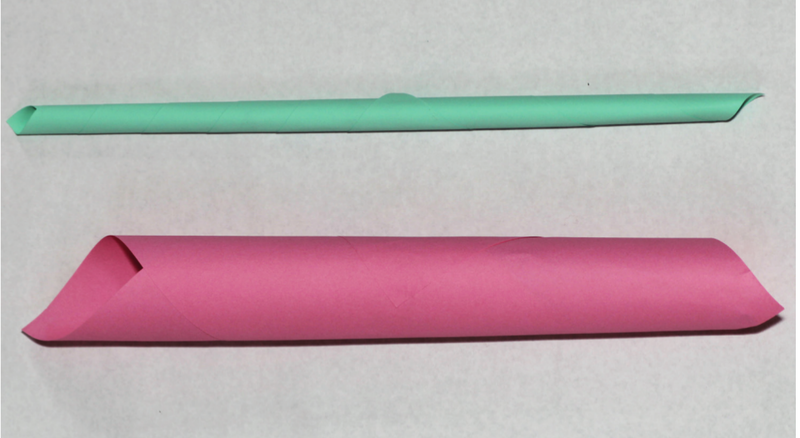
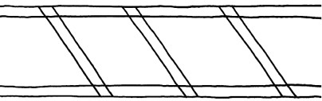

In hierdie hoofstuk gaan jy kyk na raamstrukture, soos selfoon torings, windpompe, kragdraad
torings en mynskag torings. Jy sal leer hoe hierdie strukture ontwerp en gebou word sodat hulle
sterk genoeg is, en jy gaan uitvind hoe die materiale wat in die bouprosesse van hierdie strukture
gebruik word versterk kan word. Jy sal ook die voor- en nadele van landlyn telefone en selfone
ondersoek.
Figuur 1Figuur 2Figuur 3
Sterk raamstrukture
Figuur 4: ’n SelfoontoringFiguur 5: ’n Windpomp
As die wind waai sodat die wiel van ’n windpomp
draai, word water uit ’n boorgat gepomp. Op hierdie
manier word wind as ’n energiebron gebruik.
Wind kan op dieselfde manier gebruik word
om elektrisiteit op te wek. Baie jare gelede, voor
elektrisiteit ontdek is, het mense windmeule gebruik
om graan te maal om meel te maak.
’n Selfoontoring is ’n hoë raamstruktuur met
toestelle bekend as golfontvangers en golfsenders
bo-op. Wanneer mense met mekaar praat deur
selfone te gebruik, laat die ontvangers en die
senders die golwe van een selfoon ’n ander selfoon
bereik.

Figuur 6
Trek lyne op die diagram aan die linkerkant hier onder
sodat dit meer na die
toring van ’n windpomp of ’n selfoontoring lyk. Moenie ’n liniaal gebruik nie.
Maak ’n vinnige vryhandskets
Figuur 7
Waarom dink jy is die toring van die windpomp en die selfoontoring ontwer
Ondersoek nog torings

Figuur 8: ’n Elektrisiteitstoring

Figuur 9: ’n MynskagtoringFiguur 10
Figuur 11
Kyk na die prente en foto’s wat tot dusver
in hierdie hoofstuk verskyn het.
Hulle is almal van raamwerktorings. Lyk hierdie torings meer soos ontwerp A
hieronder, of meer soos ontwerp B?
Figuur 12
Trek donker lyne op die sye van ’n driehoek in
ontwerp A in. Is daar enige
driehoeke in ontwerp B? Hoeveel driehoeke is daar in ontwerp A?
Hoekom dink jy is daar driehoeke in die torings?
Kommunikasiestelsels
Landlyntelefone of selfone: wat is die beste?
Party mense sê dit is beter om ’n
selfoon te gebruik as ’n landlyn telefoon. Ander verkies weer landlyn
telefone bo selfone.
’n Ander naam vir ’n selfoon is ’n mobiele telefoon.
Figuur 13
Waarom hoor Mavis nie wat Thomas sê nie?
Phillip en Lebogang geniet hulle gesprek.
Hoekom ondervind hulle nie dieselfde
kommunikasieprobleem as Mavis en Thomas nie?
Gebruik die onderstaande tabel en beskryf vier voordele van landlyn telefone,
en vier voordele van selfone.
Toestel
Voordele
Nadele
Landlyntelefone
Selfone
Aksienavorsing: verstewiging van strukture
Sommige soorte materiaal is nie geskik as
boumateriaal nie. Hulle eienskappe kan egter verander
en verbeter word om ’n geskikte materiaal te maak.
Jy gaan nou ’n plat vel papier verstewig om dit meer
geskik te maak as boumateriaal vir modelle.
Verstewig: Om iets stewig en sterk te maak.
Aktiwiteit 1: verstewig papier deur verbuising
Werk in pare.
Julle benodig:
twee velle A4-papier (verkieslik afvalpapier wat vir
herwinning sou gaan),
maskeerband of kleefband,
gom, en
’n skêr.
Kyk na die prente hieronder voordat julle begin

Figuur 14
Leerder 1:Rol ’n papiervel om ’n buis te vorm met ’n
gat in die middel wat nie
groter is as die gat in die middel van ’n toiletrol nie. Plak die buis met kleefband
vas sodat dit sy vorm behou.
Leerder 2: Rol ’n papiervel op om ’n kleiner buis te vorm
met ’n gat in die middel
waarin ’n potlood net-net nie pas nie. Plak die buis met kleefband vas sodat dit sy
vorm behou.
Hou die buise aan hul eindpunte vas.
Probeer om elke buis te buig. Watter een buig die maklikste?
Verbuising is ook die proses wat gebruik
word
wanneer sterk papierstrooitjies vervaardig
word. Kyk na die prent hieronder om te sien
hoe om papierstrooitjies te rol.
Plak die laaste stukkie van die papiervel
vas
om te keer dat die strooitjie afrol.
Knip die dun eindpunte van die
gerolde strooitjie af. Nou het jy ’n sterk
papierstrooitjie.
Tuisgemaakte gom
Bestanddele
1 koppie koekmeel
⅓ koppie suiker
1 ½ koppies water
1 eetlepel asyn
Metode
Meng die meel en suiker in ’n pot.
Voeg die helfte van die water by en roer.
Voeg die res van die water by en roer.
Voeg die asyn by.
Verhit dit totdat die mengsel dik en
blinkerig word. Laat dit afkoel.
Figuur 15
Aktiwiteit 2: verstewig karton deur voue daarin te maak
Werk in pare. Julle benodig ’n stuk karton, kleefband en ’n skêr.
Julle het ook twee boeke nodig. Knip twee kartonstroke, elkeen omtrent 30 cm lank
en 8 cm breed. Vou een strook met die lengte langs in die middel, sodat dit só lyk:
Figuur 16
Watter een van die twee stukke karton sal die maklikste buig?
Doen ’n ondersoek en kontroleer jou antwoord.
Een van die leerders in die paar hou die plat
kartonstrook sodat dit die spasie
tussen die twee boeke oorspan, soos wat hieronder gewys word. Die ander een
druk afwaarts in die middel van die kartonvel.
Figuur 17
Doen dieselfde met die gevoude kartonstrook.
Figuur 18
Watter een van die twee kartonstroke buig die maklikste: die plat strook of die
strook met die vou?
Aktiwiteit 3: hoe om verskillende vorms stabiel en sterk te maak
Werk in groepe van vier.
Materiale:
’n paar A4-afvalpapiervelle,
gom,
dun draad of tou en
’n spyker of els om gate mee te maak.
Elke lid van die groep moet minstens drie papierstrooitjies rol.
Voeg vier papierstrooitjies saam om ’n vorm
met vier sye te maak. Kyk wat
gebeur as jy die kante van die vierkant indruk en uittrek. Verander die vorm?
Figuur 19
Voeg nog ’n papierstrooitjie by, van die linkerkantse boonste hoek tot by die
regterkantse onderste hoek. Herhaal die gedruk en getrek. Verander die vorm
weer maklik?
Figuur 20
Deur die vierkant in twee driehoeke te verander het jy die struktuur stabiel gemaak.
Om driehoeke in ’n struktuur te maak word triangulasie
genoem.
Kyk na die vorms hieronder. Besluit as ’n groep hoe julle die vorms stabiel kan
maak.
Bou die twee vorms en toets julle idees.
Twee van julle maak vorm A, en die
ander twee maak vorm B.
Druk en trek die sye van die vorms voordat julle nog papierbuise byvoeg.
Toets julle vorms nadat julle nog papierbuise bygevoeg het. Is albei stabiel?
Figuur 21
Kopieer die twee vorms. Trek nou lyne waar jy nog papierstrooitjies sou invoeg
om driehoekvorms te maak.
Hoeveel stutte sou jy gebruik om vorm A in
driehoeke te verander?
Hoeveel papierstutte het jy gebruik om vorm B in driehoeke te verander?
Deel jou tekeninge met drie ander leerders. Kyk goed waar hulle die diagonale
dele geplaas het om hul vorms stabiel te maak.
Gebruik triangulasie om papier sterk te maak
Die tekening hieronder is van die een sy van ’n brug. Dit is nog nie voltooi nie. Voltooi die tekening
om te wys hoe triangulering gebruik gaan word.

Figuur 22
Hieronder is tekeninge van twee verskillende raamwerke.
Maak elkeen van hulle met papier of dun karton. Maak seker jy gebruik dieselfde materiaal
vir beide die raamwerke.
Sodra jy klaar is, druk liggies met een hand op elkeen van hulle. Jy sal voel hulle kan ’n bietjie
druk van bo af weerstaan.
Die vierkantige raamwerk is sterk as jy reg van bo af daarop na onder druk. Dit is swak as jy van
die kant af daarop druk.
Die driehoekige raamwerk kan ook druk van die kant af weerstaan.
Gebruik dieselfde materiaal wat julle vir die raamwerke gebruik het. Plak ’n stuk daarvan op
die boonste punt en onderste punt van elke raamwerk. Dit sal die raamwerk sterker maak.
Toets nou die sterkte van elkeen van die raamwerke. Plaas dieselfde boek eers op die een en
dan op die ander raamwerk. Begin met ’n taamlik ligte boek. Sit nog ’n boek by as die raamwerk
nie breek nie
Hoeveel boeke kan jy op elk van die raamwerke plaas voordat dit inmekaarsak?
Watter raamwerk sak eerste inmekaar?
Verduidelik waarom die ander raamwerk stewiger is.
Figuur 23
Volgende week
In die volgende hoofstuk gaan jy meer leer oor die verskillende dinge wat jy moet onthou as jy beplan om iets te bou